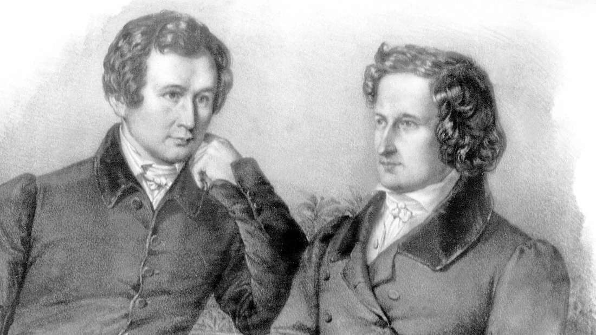

The Star Money
The story of the girl who catches falling stars in the lap of her shirt has enchanted kids and adults alike for centuries
The Brothers Grimm, Jacob (1785–1863) and Wilhelm (1786–1859), were German scholars, philologists, cultural researchers, and authors who together collected and published folklore during the 19th century.
The brothers were born in the town of Hanau in Hesse-Cassel, and spent most of their childhood in the nearby town of Steinau. They were the eldest surviving sons of Philipp Wilhelm Grimm, a lawyer, and his wife Dorothea Grimm née Zimmer. Their early academic work included the study of law at the University of Marburg, where they were influenced by their professor Friedrich Karl von Savigny.
Inspired by their interest in German folklore and their academic work, the Brothers Grimm started to collect oral folk tales and traditions. They published the first volume of "Children's and Household Tales" (Kinder- und Hausmärchen) in 1812, with a second volume following in 1815. The collection was expanded in subsequent editions and became a seminal work in the field of folklore and fairy tales.
The story of the girl who catches falling stars in the lap of her shirt has enchanted kids and adults alike for centuries

A tale about a mother goat and her kids who are tricked by a wolf, highlighting themes of cunning and caution.
Traditionally, it is the first story in their folktale collection, where a princess's promise transforms a frog into a prince.

The classic rags-to-riches story of a mistreated girl who finds her true love with the help of a magical transformation.
A princess, Snow White, finds refuge with seven dwarfs while fleeing from her wicked stepmother, the Queen, who is envious of her beauty.
The Brothers Grimm are regarded as pioneers in the field of folklore studies and their work has had a lasting impact on the preservation and appreciation of traditional stories. Their tales have been translated into numerous languages and adapted into countless films, books, and other media, making them an integral part of world literature and culture.
Their work also contributed to the study of linguistics and philology, and their extensive research on German language and grammar laid the groundwork for future studies in these fields. The Brothers Grimm are celebrated not only for their fairy tales but also for their contributions to German culture and scholarship.